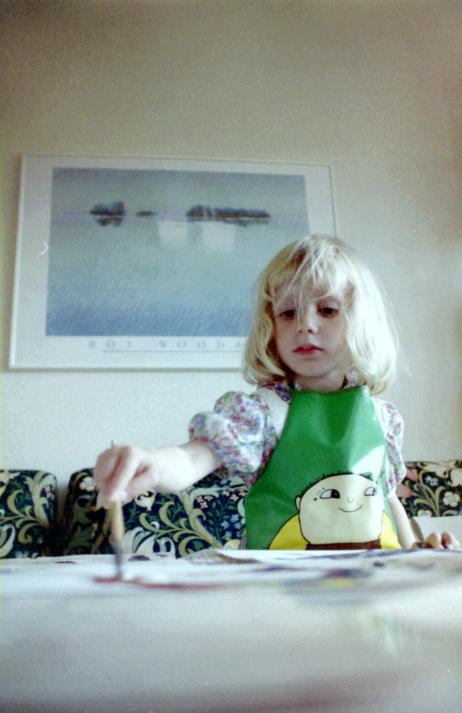
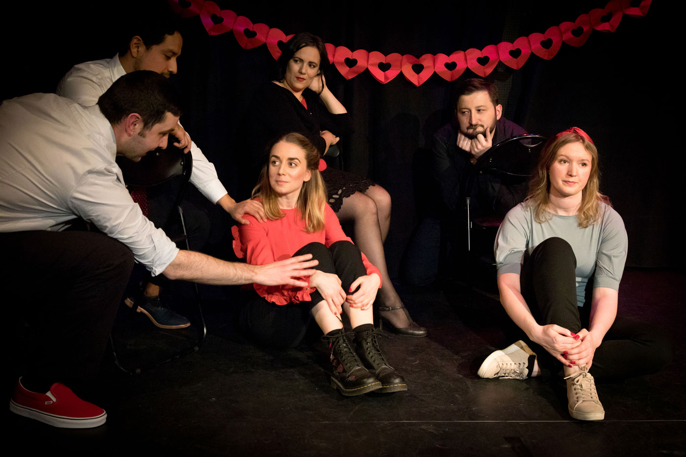
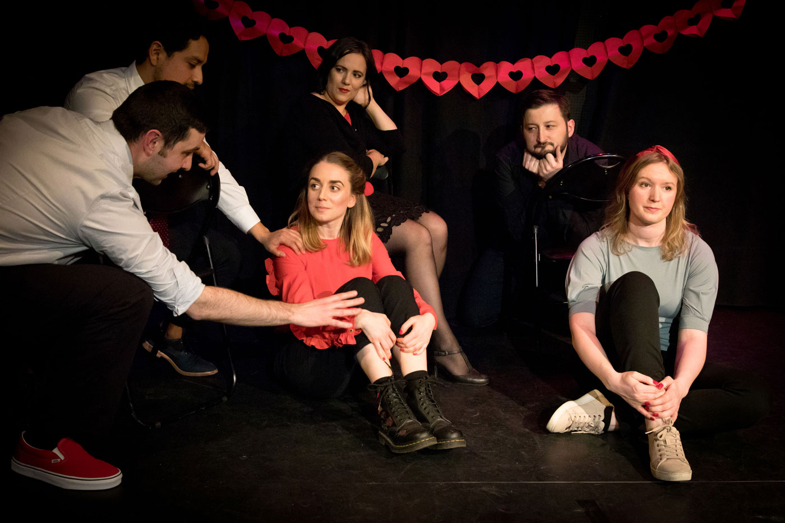

About me
About me
I’m passionate about user experience because I love understanding user and business needs. In short: I’m a problem solver.
It all started when I worked as a brand strategist. My job was to understand the needs of all stakeholders and define the problem that needed to be solved. I was the one who made complex things structured and clear.
But I was always drawn back to the feeling I had as a kid. I was constantly drawing. All I wanted was a pen and paper and I was good for hours.
The desire to take a bigger part in the whole project, from defining the problems to forming the solutions, led me to Hyper Island. At the Design Lead program I have extended my toolbox to be able to turn insights into designs. I’m really excited to continue doing just that.
I've done strategies for Swedish and international clients. This is a protest against unequal pay, awarded in Cannes Lions 2014.
 As a kid I was always drawing. Going to art school was a given. Self portraits and painting from 2007.
Going to art school was a given. Self portraits and painting from 2007.
 
In my free time I do improv comedy. It’s theatre without a script where everything is made up on the spot! I practice, perform and teach.

In my free time I do improv comedy. It’s theatre without a script where everything is made up on the spot! I practice, perform and teach.